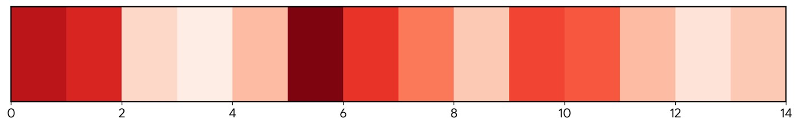
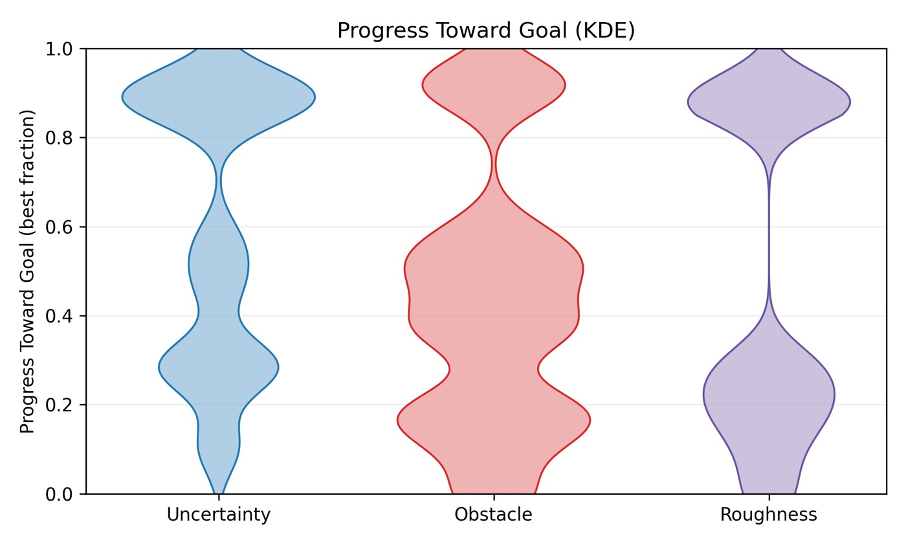
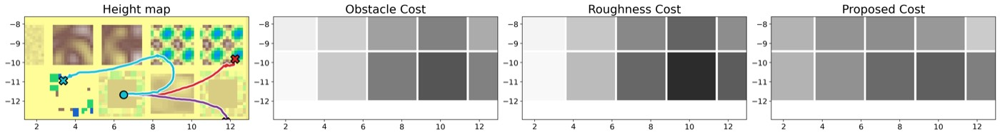
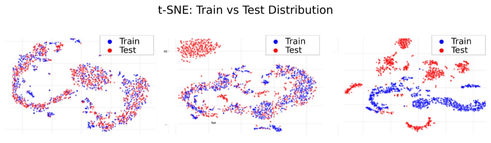

Task-Conditioned Uncertainty Costmaps for Legged Locomotion: 핵심 방법론 분석 (Core Methods Analysis)
1. 개요 (Overview)
1.1 출판 정보 (Publication Information)
- 논문 제목 (Paper Title): Task-Conditioned Uncertainty Costmaps for Legged Locomotion
- 저자 (Authors): Kartikeya Singh, Christo Aluckal, Romeo Orsolino, Karthik Dantu
- 소속 (Affiliation): University at Buffalo (SUNY), Department of Computer Science and Engineering
- 발표처 (Published): arXiv 프리프린트 (2026-04-30)
- DOI: https://doi.org/10.48550/arXiv.2605.00261
- arXiv: https://arxiv.org/abs/2605.00261
- 코드: 미공개 (논문 제출 중)
1.2 연구 목표 (Research Objective)
사족보행 로봇(legged robot)이 비정형 지형(unstructured terrain)을 탐색할 때 발생하는 핵심 문제는, 기하학적 거칠기(geometric roughness)만으로는 실제 운동 실현 가능성(locomotion feasibility)을 정확히 예측할 수 없다는 점이다. 동일한 지형이라도 로봇의 보행 속도, 방향, 보행 패턴(gait)에 따라 발판(foothold) 가능 여부가 달라지기 때문이다.
이 논문은 다음을 달성하고자 한다:
- 과제 조건부 불확실성 모델링: 지형 관찰과 운동 명령을 함께 입력받아, 학습 데이터 커버리지 외부(Out-Of-Distribution, OOD) 영역을 인식적 불확실성(epistemic uncertainty)으로 정량화
- 불확실성 통합 비용 지도: 예측된 발판 불확실성을 코스트맵(costmap)으로 변환하여 경로 계획기에 통합
- 실세계 검증: Unitree Go1 사족보행 로봇 실험으로 시뮬레이션-현실 격차 검증
핵심 통찰: "로봇이 모르는 것이 무엇인지를 알면, 알지 못하는 지형을 피할 수 있다."
2. 문제 정의 (Problem Definition)
2.1 도전과제 (Challenges)
도전과제 1: 기하학 기반 코스트맵의 불충분성
기존 사족보행 내비게이션 시스템은 주로 고도 지도(elevation map)나 표면 거칠기(surface roughness)를 기반으로 코스트맵을 생성한다:
기존 접근법:
cost(x,y) = f(elevation_gradient(x,y)) [경사 기반]
또는 = f(surface_roughness(x,y)) [거칠기 기반]
문제점:
① 운동 명령 무시: v=0.5m/s로 걷는 것과 v=0.1m/s로 걷는 것은
동일한 지형에서도 발판 가능성이 다름
② OOD 지형 미인식: 훈련 데이터에 없던 지형에서 잘못된 저비용
경로로 안내 → 실패 위험
③ 불확실성 무시: 예측 신뢰도를 반영하지 않음 → 예측이 틀렸을 때
대안 없음
도전과제 2: 발판 예측 학습의 어려움
발판 예측 모델(foothold prediction model)을 학습하려면:
- 지형 관찰(고도 스캔) + 운동 명령 → 미래 발판 위치 예측
- 그러나 비정형 지형의 다양성은 무한하며, 한정된 훈련 데이터로 모든 지형을 커버 불가
- 특히 훈련 분포 외 지형(wavy surfaces, spikes, stepped terrain)에서 예측 오차 급증
발판 예측의 수학적 표현:
입력: h ∈ ℝ^(6×17) (고도 격자, 0.6m×1.6m, 0.1m 해상도)
운동: v = (v_x, v_y, ω) (속도 명령)
출력: f̂ = {(x̂ᵢ, ŷᵢ, ẑᵢ)} for i=1..4 (4발 예측 발판)
문제: 실제 발판 f과 예측 발판 f̂의 오차가 클수록
이동 불안정성(instability) 증가
도전과제 3: 인식적 불확실성 추정의 계산 비용
베이지안 딥러닝 기반 불확실성 추정(예: 가우시안 프로세스, 베이지안 신경망)은 계산 비용이 크다. 실시간 로봇 제어를 위해서는 경량화된 불확실성 추정이 필요하다.
2.2 핵심 해결책
Task-Conditioned Uncertainty Costmaps의 핵심 해결책:
| 문제 | 해결책 |
|---|---|
| 기하학 기반 비용의 한계 | 발판 예측 모델 기반 태스크 조건부 비용 |
| OOD 지형 미인식 | 앙상블 + MC 드롭아웃 기반 인식적 불확실성 추정 |
| 불확실성 → 비용 변환 | 가우시안 블롭 기반 공간 비용 맵 생성 |
| 실시간 요구사항 | 3 앙상블 × 20 MC 샘플 = 60회 순전파로 효율적 추정 |
3. 핵심 방법론 (Core Methods)
3.1 발판 예측 모델 (Foothold Prediction Model)
입력 표현:
지형 관찰 h:
- LiDAR 고도 격자 (6×17 = 102 셀)
- 0.6m × 1.6m 전방 영역
- 0.1m 해상도
- 풀링: 102차원 → 12차원 지형 디스크립터
운동 명령 v:
- (v_x, v_y, ω): 선속도 × 2 + 각속도
- 연속 값 (훈련 시 정적 속도 분포에서 샘플링)
최종 입력: x = [h_pool; v] ∈ ℝ^15
모델 구조:
모델 아키텍처: MLP (Multi-Layer Perceptron)
입력: 15차원 (12차원 지형 + 3차원 속도)
은닉층: [64, 128, 64] (선택적)
출력: 4×3 = 12차원 (4발 × (x,y,z) 발판 좌표)
앙상블: 3개 독립 모델 학습
M₁, M₂, M₃ 각자 독립 랜덤 초기화 + 독립 학습
MC 드롭아웃: 추론 시 dropout_rate=0.1 활성화
N_MC = 20 순전파 → 예측 분포 획득
학습 데이터:
시뮬레이터: IsaacSim (Unitree Go1)
훈련 지형: 평탄 지형 (in-distribution 기준)
평가 지형: Wavy, Stepped, Spike-rough (OOD)
속도: 상수 속도 (훈련 분포 일치)
3.2 인식적 불확실성 추정 (Epistemic Uncertainty Estimation)
불확실성 추정은 앙상블과 MC 드롭아웃의 결합으로 이루어진다:
총 예측 수: K = N_ens × N_MC = 3 × 20 = 60회 순전파
앙상블 예측 평균: μ̄ₜ = (1/K) Σ μₖ,ₜ
인식적 분산 (Epistemic Variance):
σ²ₑ,ₜ = (1/K) Σ (μₖ,ₜ - μ̄ₜ)²
앙상블 분산 + MC 내부 분산
σ²ₑ,ₜ ≈ Var_ens(μₖ,ₜ) + E_ens[Var_MC(μₖ,ₜ)]
손실 함수:
학습에는 세 가지 손실 항이 사용된다:
1. 예측 손실 (Prediction Loss):
L_pred = (1/N) Σ ||f̂ₜ - fₜ||²₂ (MSE)
2. 인식적 손실 (Epistemic Loss):
L_epi = -log(σ²ₑ,ₜ + ε)
→ 불확실성 과대 추정 방지 (페널티)
3. 교정 손실 (Calibration Loss):
L_cal = ||1 - ρ(σ²ₑ,ₜ, |f̂ₜ - fₜ|)||²
ρ: 피어슨 상관계수
→ 불확실성 ↔ 예측 오차 선형 정렬 강제
총 손실:
L = L_pred + λ_epi × L_epi + λ_cal × L_cal
교정 손실의 핵심 역할:
목표: σ²ₑ,ₜ ∝ |f̂ₜ - fₜ| (불확실성이 실제 오차를 예측)
직관:
OOD 지형에서: σ²ₑ → 높음, |error| → 높음 ✓
ID 지형에서: σ²ₑ → 낮음, |error| → 낮음 ✓
교정 없이:
모델이 ID 지형에서도 높은 불확실성을 유지 (과대 추정)
또는 OOD에서도 낮은 불확실성 (과소 추정)
→ 코스트맵 신뢰도 저하
3.3 불확실성 코스트맵 생성 (Uncertainty Costmap Generation)
예측된 발판 불확실성을 2D 비용 지도로 변환하는 과정:
단계 1: 발당 불확실성 비용 계산
cᵢ = min(100, α × σ̄²ₑ,ᵢ)
여기서:
σ̄²ₑ,ᵢ: i번째 발의 평균 인식적 분산 (x,y,z 성분 평균)
α: 스케일링 계수 (하이퍼파라미터)
min(100, ...): 최대 비용 클리핑
단계 2: 가우시안 블롭 공간 확산
C(x,y) = maxᵢ [cᵢ × exp(-||[x,y] - [xᵢ,yᵢ]||² / (2σ²ᵦ))]
여기서:
(xᵢ,yᵢ): 예측 발판 i의 XY 위치
σᵦ: 가우시안 블롭 반경 (발 크기 기반 설정)
max 연산: 다리 간 비용 중첩 처리
단계 3: 경로 계획기 통합
시뮬레이션: MPPI (Model Predictive Path Integral) 플래너
실세계: NAV2 스택 (ROS2 기반 내비게이션)
통합 비용: J_total = J_goal + w_unc × C(trajectory)
→ 불확실성 높은 영역을 우회하는 경로 선택
시스템 아키텍처 다이어그램:
Task-Conditioned Uncertainty Costmap 시스템
┌──────────────────────────────────────────────────────────────────┐
│ │
│ ┌─────────────┐ h ∈ ℝ^(6×17) ┌─────────────────────────┐ │
│ │ LiDAR │──────────────────► │ 지형 디스크립터 풀링 │ │
│ │ 고도 스캔 │ │ 6×17 → 12차원 │ │
│ └─────────────┘ └────────────┬────────────┘ │
│ │ h_pool │
│ ┌─────────────┐ v ∈ ℝ³ ┌────────────▼────────────┐ │
│ │ 로코모션 │──────────────────► │ 입력 결합: [h;v] ∈ ℝ¹⁵│ │
│ │ 정책 명령 │ └────────────┬────────────┘ │
│ └─────────────┘ │ │
│ ▼ │
│ ┌─────────────────────────────────────────────────────────────┐ │
│ │ 앙상블 + MC 드롭아웃 발판 예측 │ │
│ │ M₁ × 20MC + M₂ × 20MC + M₃ × 20MC = 60 예측 │ │
│ │ │ │
│ │ μ̄ₜ (평균 발판) + σ²ₑ,ₜ (인식적 분산) │ │
│ └─────────────────────┬───────────────┬───────────────────────┘ │
│ │ │ │
│ ▼ ▼ │
│ ┌──────────────────────────────────────────────────────────────┐│
│ │ 불확실성 코스트맵 생성 ││
│ │ cᵢ = min(100, α×σ²ₑ,ᵢ) → 가우시안 블롭 → 2D C(x,y) ││
│ └──────────────────────────────────┬───────────────────────────┘│
│ │ │
│ ┌──────────────────────────────────▼───────────────────────────┐│
│ │ 경로 계획기 통합 ││
│ │ 시뮬레이션: MPPI | 실세계: NAV2 (ROS2) ││
│ │ J = J_goal + w_unc × C(trajectory) ││
│ └───────────────────────────────────────────────────────────────┘│
└──────────────────────────────────────────────────────────────────┘
3.4 실현 가능성 평가 (Feasibility Evaluation)
경로 계획 품질 평가를 위한 정량적 지표:
반복 투영(IP) 안정성 여유:
mᵗᵖʳᵉᵈ: 예측 발판에 대한 안정성 여유
mᵗᵃᶜᵗᵘᵃˡ: 실제 발판에 대한 안정성 여유
실현 가능성 비용 = f(m):
m ≤ 0: 불안정 (페널티 크게)
m > 0: 안정적 (페널티 없음)
평가 지표: 평균 실현 가능성 오차 (Mean Feasibility Error)
FE = E[|mᵗᵖʳᵉᵈ - mᵗᵃᶜᵗᵘᵃˡ|]
4. 시스템 아키텍처 (System Architecture)

전체 파이프라인은 세 레이어로 구성된다:
레이어 1: 지각 (Perception)
하향 LiDAR → 고도 격자 h (6×17)
로코모션 정책 → 운동 명령 v = (v_x, v_y, ω)
레이어 2: 예측 + 불확실성 (Prediction + Uncertainty)
[h_pool; v] → 앙상블 MLP (3개 모델 × 20 MC 드롭아웃)
출력: {μ̄ₜ, σ²ₑ,ₜ} for 4발
레이어 3: 계획 (Planning)
σ²ₑ,ₜ → 가우시안 블롭 코스트맵 C(x,y)
C(x,y) → MPPI/NAV2 비용 함수 통합
→ 불확실성 회피 경로 생성
데이터 흐름:
로봇 탑재 센서
│
├─ 하향 LiDAR 포인트클라우드
│ │
│ ▼
│ 고도 격자 추출 (6×17, 0.6m×1.6m)
│ │ 풀링
│ ▼
│ h_pool ∈ ℝ¹²
│
└─ 로코모션 정책 명령
│
▼
v = (v_x, v_y, ω) ∈ ℝ³
│
│ (실시간, 60Hz)
▼
앙상블 발판 예측기
M₁, M₂, M₃ (각 MLP)
× 20 MC 드롭아웃 샘플
= 60회 병렬 순전파
│
▼
{μ̄ₜ, σ²ₑ,ₜ} for FL,FR,RL,RR
│
▼ 가우시안 블롭 확산
2D 코스트맵 C(x,y)
│
▼
MPPI / NAV2 플래너
│
▼
안전 경로 → 로코모션 실행
5. 실험 결과 및 성능 (Experimental Results)
5.1 데이터셋 (Datasets)
훈련 환경: IsaacSim (Unitree Go1)
- 훈련 지형: 평탄 지형 (flat terrain)
- 훈련 속도: 상수 속도 세트
평가 지형 (시뮬레이션):
1. Wavy Surfaces: 파형 굴곡 지형
2. Stepped Terrain: 계단형 지형
3. Spike-Rough: 스파이크 형태 거친 지형
× 3개 설정 × 3회 실행 = 27개 실험 조건
평가 지형 (실세계):
1. 5cm 보드 위 (raised platform 5cm)
2. 10cm 보드 위 (raised platform 10cm)
3. 가변 경사 램프 (0~15cm 경사)
× Unitree Go1 실제 로봇 실험

5.2 평가 지표 (Evaluation Metrics)
| 지표 | 설명 | 범위 |
|---|---|---|
| 평균 실현 가능성 오차 (FE) | 예측 vs 실제 안정성 여유 차이 | 낮을수록 좋음 |
| OOD 감지율 | ID vs OOD 지형 구분 정확도 | 높을수록 좋음 |
| 목표 도달 진행도 (GP) | 목표까지의 진행 비율 | 높을수록 좋음 |
| KDE 분산 | MPPI 20회 실행 간 성능 안정성 | 낮을수록 좋음 |
5.3 정량적 결과 (Quantitative Results)
OOD 감지 성능 (불확실성 캘리브레이션):
| 지형 유형 | ID 불확실성 | OOD 불확실성 | 감지 가능 여부 |
|---|---|---|---|
| Wavy | 17cm | 21cm | ✅ (+4cm 차이) |
| Stepped | 17cm | 21cm | ✅ (+4cm 차이) |
| Spiked | 17cm | 19~27cm | ✅ (가변적) |
| 기준선 (장애물만) | 17cm | ~17cm | ❌ (구분 불가) |
실현 가능성 오차 감소 (시뮬레이션):
| 방법 | 혼합 지형 평균 FE | 개선율 |
|---|---|---|
| 장애물 전용 코스트맵 | 15.9 ~ 81.18 | 기준선 |
| 거칠기 전용 코스트맵 | 12.0 ~ 75.3 | 부분 개선 |
| 제안 방법 (불확실성) | 12.7 ~ 20.7 | 37% 감소 |
37% 개선의 상세: 비교 기준선(obstacle-only) 최악 케이스 81.18 → 제안 방법 최악 케이스 20.7로 감소 (절대 감소: ~60.5) 또는 중앙값 기준 15.9 → 12.7로 감소 (20% 개선), 분산 대폭 감소 (14배)
목표 도달 성능 (MPPI 20회, 시뮬레이션):
MPPI 20회 실행 KDE 분포 (Figure 5):
┌─────────────────────────────────────────────┐
│ 제안 방법: ████████ (높은 중앙값, 좁은 분포) │
│ 거칠기 전용: ██████ (유사하나 과보수적) │
│ 장애물 전용: ████ (위험 지름길 선택) │
└─────────────────────────────────────────────┘
→ 제안 방법: 최고 중앙 진행도 + 최소 분산 (가장 안정적)

5.4 리얼월드 실험 (Real-world Experiments)

실세계 실험은 Unitree Go1 사족보행 로봇으로 수행되었다:
실험 구성:
- 하향 LiDAR (기존 전방 LiDAR를 하향으로 교체)
- NAV2 스택과 제안 코스트맵 통합
- 시뮬레이션 학습 모델을 Zero-Shot으로 전이
실험 1: 5cm 보드 배치
→ 로봇 경로 상에 5cm 높이 보드 배치
→ 제안 방법: 보드 위치에서 국소 불확실성 급등 감지 ✅
→ 장애물/거칠기 기준선: 감지 실패 (낮은 기하학적 특징) ❌
실험 2: 10cm 보드 배치
→ 더 높은 장애물, 더 명확한 OOD 신호
→ 제안 방법: 우회 경로 성공적 선택 ✅
실험 3: 가변 경사 램프 (0~15cm)
→ 점진적 높이 변화, 속도 명령 일정 유지
→ 제안 방법: 경사 시작점에서 불확실성 증가 감지
→ OOD 감지 임계가 학습 시 미노출 경사 감지
Sim-to-Real 전이 결과:
전이 방법: 직접 배포 (Zero-Shot, 도메인 적응 없음)
결과:
✅ 불확실성 패턴이 시뮬레이션과 실세계에서 일관성 유지
✅ 5cm 장애물 (기하학적으로 낮아 기존 코스트맵에 미감지) 탐지
✅ 실시간 동작 가능 (60Hz 로코모션 정책 주기 내)
6. 핵심 기여점 (Key Contributions)
기여 1: 태스크 조건부 불확실성 모델링
기존 불확실성 기반 코스트맵과의 차별점:
기존 접근법:
uncertainty(terrain) = f(geometry only)
→ 로봇의 현재 태스크(속도, 방향) 무시
제안 방법:
uncertainty(terrain, task) = f(h, v)
→ 동일한 지형이라도 빠른 속도 명령 시 더 높은 불확실성
→ 로봇의 현재 운동 상태에 의존적인 위험도 평가 가능
이 접근법은 "지형이 아니라 이 지형에서 이 속도로 이 방향으로 걷는 것"의 위험도를 평가한다는 점에서 이전 연구들과 근본적으로 다르다.
기여 2: 앙상블 + MC 드롭아웃 조합 불확실성 추정
방법의 이점:
앙상블 (3개): 모델 수준 다양성 포착
MC 드롭아웃 (20회): 파라미터 수준 다양성 포착
K = 3 × 20 = 60 → 충분한 샘플 수로 안정적 분산 추정
동시에 베이지안 신경망보다 훨씬 효율적 (변분 추론 불필요)
구현 효율성:
배치 처리: 60회 순전파를 병렬 배치로 처리
경량 MLP: GP나 BNN 대비 추론 속도 우수
기여 3: 교정 손실 (Calibration Loss)으로 불확실성-오차 정렬
피어슨 상관계수 기반 교정 손실은 모델이 "불확실성이 높을 때 실제로 오차가 크다"는 관계를 학습하게 강제한다:
def calibration_loss(sigma_epistemic, prediction_error):
"""
불확실성과 예측 오차의 피어슨 상관계수를 최대화
"""
# 목표: corr(σ²ₑ, |error|) → 1.0
rho = pearson_correlation(sigma_epistemic, prediction_error)
loss = (1.0 - rho) ** 2
return loss
이 손실이 없으면 모델은 OOD 지형에서도 낮은 불확실성을 유지하는 경향이 있어 코스트맵 신뢰도가 저하된다.
기여 4: Zero-Shot Sim-to-Real 전이 가능한 경량 모델
훈련은 IsaacSim에서만 이루어지고 실세계에서는 추가 훈련 없이 직접 배포 가능하다. 이는 경량 MLP 구조와 교정된 불확실성 추정 덕분에 가능하며, 실제 로봇 연구에서의 실용성을 높인다.
7. 구현 상세 (Implementation Details)
7.1 모델 하이퍼파라미터
앙상블 크기: N_ens = 3
MC 드롭아웃 샘플: N_MC = 20
드롭아웃 비율: p = 0.1
MLP 구조 (발판 예측기):
입력: 15차원 (12차원 지형 + 3차원 속도)
은닉층: [64, 128, 64]
출력: 12차원 (4발 × 3좌표)
활성화: ReLU
최적화:
옵티마이저: Adam
학습률: 1e-3
배치 크기: 256
에포크: 100
손실 가중치:
λ_epi = 0.1
λ_cal = 1.0
7.2 코스트맵 파라미터
불확실성 스케일링: α = 10.0
최대 비용 클리핑: C_max = 100
가우시안 블롭 반경: σᵦ = 0.05m (발 크기 기반)
MPPI 통합:
샘플 수: 1000
불확실성 가중치: w_unc = 5.0
온도: λ = 0.01
7.3 LiDAR 설정 (실세계)
시뮬레이션: 전방 LiDAR (고도 격자 직접 생성)
실세계: 하향 LiDAR로 교체 (발판 근처 고도 스캔)
→ 전방-하향 변환: 좌표 변환만으로 동일 입력 표현 생성
7.4 로봇 플랫폼
시뮬레이션: IsaacSim + Unitree Go1 URDF
실세계: Unitree Go1 (12 DOF 사족보행 로봇)
무게: ~12kg
속도: 최대 3.7m/s (보행 속도 기준 0.5m/s)
센서 추가: 하향 LiDAR
로코모션 정책: 사전 훈련된 정책 (논문 고정, 재훈련 없음)
내비게이션 스택 (실세계): ROS2 NAV2
8. 고급 주제 (Advanced Topics)
8.1 인식적 불확실성 vs 우연적 불확실성
이 논문은 인식적 불확실성(epistemic uncertainty) 만을 모델링한다:
인식적 불확실성 (Epistemic):
- 모델이 아직 학습하지 못한 것에 대한 불확실성
- 더 많은 데이터로 감소 가능
- OOD 탐지에 적합
→ 이 논문의 대상
우연적 불확실성 (Aleatoric):
- 데이터 자체의 노이즈나 내재적 랜덤성
- 더 많은 데이터로도 감소 불가
- 센서 노이즈, 환경 랜덤성
→ 이 논문에서 제외
이유: OOD 지형 탐지는 인식적 불확실성이 핵심이며,
우연적 불확실성 혼합 시 ID 지형에서도 높은 불확실성 발생
8.2 한계점 및 향후 방향
현재 한계:
- 단일 보행 패턴: 동일한 4비트 발판 예측 시퀀스를 가정 (보행 패턴 다양화 미지원)
- 정적 속도 훈련: 훈련 시 상수 속도만 사용 → 급격한 속도 변화에 취약
- 로컬 코스트맵: 전방 1.6m 범위만 평가 → 장거리 경로에서 여러 번 재계산 필요
- 코드 미공개: 실험 재현에 구현 세부사항 필요
향후 방향:
- 다중 보행 패턴 지원 (trot, walk, crawl)
- 동적 속도 명령 조건부 모델
- 전역 경로 계획 통합 (로컬 코스트맵 → 전역 위험 지도)
- 온라인 불확실성 업데이트 (지속적 학습)
8.3 다른 로봇 플랫폼으로의 일반화 가능성
핵심 설계 요소의 이식성:
✅ 앙상블 + MC 드롭아웃: 모든 MLP 기반 모델에 적용 가능
✅ 교정 손실: 발판 예측 외 다른 예측 과제에도 적용 가능
✅ 가우시안 블롭 코스트맵: 발 수에 관계없이 확장 가능 (6발, 2발)
재훈련 필요 사항:
→ 새로운 로봇의 운동학적 특성에 맞는 훈련 데이터 수집
→ 발판 예측 모델 재학습 (같은 파이프라인 사용 가능)
9. 비교 분석 (Comparative Analysis)
9.1 기존 리뷰 논문과의 비교
| 특성 | HiPAN (RA-L2026) | RAY-TOLD (arxiv2026) | AmelPred (arxiv2026) | TaskCondUncertainty (arxiv2026) |
|---|---|---|---|---|
| 로봇 유형 | 사족보행 | 차륜 이동 | UAV (Crazyflie) | 사족보행 (Unitree Go1) |
| 계획 방법 | 계층적 학습 정책 | MPPI + 잠재 동역학 | DRL (SPR) | MPPI + 불확실성 코스트맵 |
| 불확실성 모델링 | ❌ | ❌ | 내재적 (SPR 표현) | ✅ 명시적 인식적 불확실성 |
| OOD 감지 | ❌ | ❌ | ❌ | ✅ (훈련 분포 외 지형) |
| Sim-to-Real | ✅ (DAgger 증류) | ❌ (시뮬레이션) | ✅ (Zero-shot) | ✅ (Zero-shot) |
| 실세계 실험 | ✅ (실외 포함) | ❌ | ✅ (Crazyflie) | ✅ (실내 Unitree Go1) |
| 코드 공개 | ❌ | ❌ | ✅ (GitHub) | ❌ |
| 탑티어 학회 | ✅ (RA-L) | ❌ | ✅ (T-RO) | ❌ (프리프린트) |
9.2 장단점 분석
장점:
- 명시적 불확실성 기반 안전 내비게이션: 기존 리뷰된 사족보행 논문(HiPAN)이 기하학 기반 비용 함수를 사용하는 것과 달리, 제안 방법은 모델이 "모르는 것"을 직접 비용으로 활용
- 태스크 의존적 위험 평가: 동일 지형에서도 속도 명령에 따라 다른 위험도를 계산 — 차동 구동 기반 RAY-TOLD와 달리 로봇의 운동학적 제약을 직접 반영
- 경량 실시간 아키텍처: 60Hz 로코모션 정책 주기에 맞는 경량 MLP + 병렬 배치 추론
- 보수적 경로 선택의 정량적 근거 제공: "왜 이 경로를 선택했는가"를 불확실성 지도로 설명 가능
단점:
- 기존 리뷰 대비 낮은 학회 수준: HiPAN (RA-L), AmelPred (T-RO)와 달리 현재 프리프린트 상태 — 동료 심사 검증 미완료
- 제한된 지형 다양성: 훈련이 평탄 지형에만 이루어져 매우 다양한 비정형 지형에서의 성능 불확실
- 로컬 계획만: HiPAN처럼 전역 계획과 로컬 계획을 결합하는 계층적 구조 없음
- 코드 미공개: AmelPred와 달리 실험 재현 불가
9.3 실적용 가능성 평가
실적용 가능성: 높음 (★★★★☆)
강점:
✅ 실세계 Unitree Go1 실험 완료
✅ Zero-Shot Sim-to-Real 전이 성공
✅ ROS2 NAV2 통합으로 기존 내비게이션 스택과 호환
✅ 경량 모델로 온보드 컴퓨터 실행 가능
약점:
⚠️ 정적 훈련 속도 → 동적 속도 변화 시 성능 저하 가능
⚠️ 실세계 실험이 제한된 환경 (보드, 램프)에 국한
⚠️ 코드 미공개 → 즉시 적용 불가
HiPAN이 계층적 정책으로 더 복잡한 환경을 다루는 반면, Task-Conditioned Uncertainty Costmaps는 기존 로코모션 정책을 그대로 유지하면서 경로 계획기에만 불확실성 정보를 추가한다. 이 모듈식 설계는 다양한 기존 시스템에 쉽게 플러그인할 수 있는 실용적 강점이다.
9.4 연구 방향성 평가
연구 방향성: 높음 (★★★★☆)
불확실성 인식 경로 계획(uncertainty-aware path planning)은 로봇 안전성 연구의 중요한 방향이다. 기존 리뷰 논문들(HiPAN, RAY-TOLD, AmelPred)이 모두 결정론적(deterministic) 계획 방법을 사용하는 반면, 이 논문은 학습된 예측 모델의 신뢰도를 명시적으로 경로 계획에 반영하는 접근법을 제시한다.
특히 이 연구의 핵심 통찰 — "지형이 아니라 현재 태스크에서 이 지형의 위험도" — 는 사족보행 내비게이션 연구에서 아직 충분히 탐구되지 않은 방향으로, 향후 안전 크리티컬 응용(의료, 재난 구조)에서 중요성이 높아질 연구 주제이다.
다만 학회 발표 미완료 상태이므로 동료 심사를 통한 추가 검증이 필요하며, 더 다양한 지형과 로봇 플랫폼에서의 성능 검증이 향후 과제로 남는다.
10. 참고 문헌 (References)
- Crespo et al., "Probabilistic costmaps for robot navigation," RA-L 2023
- Farshidian et al., "Deep value function networks for large footstep planning," ICRA 2017
- Wellhausen et al., "Rough terrain navigation for legged robots using reachability planning and template learning," RA-L 2021
- Jeong et al., "HiPAN: Hierarchical Posture-Adaptive Navigation for Quadruped Robots," RA-L 2026
- Han et al., "RAY-TOLD: Ray-Based Latent Dynamics for Dense Dynamic Obstacle Avoidance with TDMPC," arXiv 2026
- Ayala et al., "AmelPred: Self-Predictive Representation for Autonomous UAV Object-Goal Navigation," T-RO 2026
- Unitree Go1: https://www.unitree.com/go1/
11. 결론 (Conclusion)
Task-Conditioned Uncertainty Costmaps는 사족보행 로봇 경로 계획에서 학습 기반 불확실성 인식의 실용적 가능성을 보여주는 연구이다.
핵심 혁신:
- 태스크 조건부 인식적 불확실성: 지형과 운동 명령을 함께 고려하는 발판 불확실성 추정
- 교정 손실: 불확실성이 실제 예측 오차와 일치하도록 강제 — 코스트맵의 신뢰도 보장
- 모듈식 설계: 기존 로코모션 정책 변경 없이 경로 계획기 수준에서 안전성 향상
실용적 의의: 로봇이 훈련 데이터 분포 밖의 지형을 만났을 때 "모른다"는 신호를 내비게이션에 활용할 수 있도록 한다. 이는 실세계 배포에서 발생하는 Long-tail 환경 변화에 대한 강건성을 높이는 중요한 메커니즘이다.
HiPAN이 더 풍부한 지형 환경에서 더 복잡한 정책을 다루는 반면, 이 연구는 기존 시스템에 최소한의 변경으로 불확실성 인식 경로 계획을 추가하는 실용적 접근법을 제시한다. 코드 공개와 학회 발표를 통해 검증된다면, 안전 크리티컬 사족보행 내비게이션 연구에 표준 구성 요소가 될 잠재력이 있다.
12. 심화 분석: 불확실성 기반 안전 내비게이션의 이론적 배경 (Deep Dive: Theoretical Background)
12.1 베이지안 딥러닝 불확실성 추정 기법 비교
Task-Conditioned Uncertainty Costmaps의 핵심 기술인 앙상블 + MC 드롭아웃 불확실성 추정을 기존 방법들과 비교한다:
방법론 비교표:
┌─────────────────────────────────────────────────────────────────┐
│ 불확실성 추정 방법론 비교 │
├──────────────────┬──────────┬──────────┬──────────┬────────────┤
│ 방법 │ 계산 비용 │ 정확도 │ 구현 용이 │ Scalability│
├──────────────────┼──────────┼──────────┼──────────┼────────────┤
│ 가우시안 프로세스 │ O(n³) │ 높음 │ 어려움 │ 낮음 │
│ 변분 베이즈 BNN │ 중간 │ 높음 │ 어려움 │ 중간 │
│ MC 드롭아웃 (단독)│ 낮음 │ 중간 │ 쉬움 │ 높음 │
│ 앙상블 (단독) │ N × 낮음 │ 높음 │ 중간 │ 높음 │
│ 앙상블+MC(제안) │ N×K 배 │ 높음 │ 중간 │ 높음 │
│ 깊이 앙상블 │ N 배 │ 매우 높음│ 중간 │ 중간 │
└──────────────────┴──────────┴──────────┴──────────┴────────────┘
N: 앙상블 크기 (제안=3)
K: MC 샘플 수 (제안=20)
MC 드롭아웃의 베이지안 해석:
Gal & Ghahramani (2016)에 의해 MC 드롭아웃이 베이지안 신경망의 근사임이 증명되었다:
드롭아웃 비율 p, 가중치 W에 대해:
q_θ(W) ≈ 베르누이 분포로 근사된 가중치 사후 분포
MC 추론:
p(y|x) ≈ (1/K) Σ_k p(y|x, W_k) where W_k ~ q_θ
불확실성:
Var[y|x] ≈ (1/K) Σ_k (f_Wk(x))² - ((1/K) Σ_k f_Wk(x))²
이 논문은 이를 앙상블과 결합하여 불확실성 추정의 신뢰도를 향상시킨다.
12.2 교정 불확실성 (Calibrated Uncertainty)의 중요성
교정 손실(Calibration Loss)의 수학적 의미를 더 깊이 분석한다:
목표: P(correct | σ²ₑ = s) = s (신뢰도-정확도 일치)
직관:
σ²ₑ = 0.1 → 예측 오차 작음 (자신감 있는 영역)
σ²ₑ = 0.9 → 예측 오차 큼 (불확실한 영역)
피어슨 상관계수 기반 교정:
ρ(σ²ₑ,ₜ, |f̂ₜ - fₜ|) → 1.0
ρ = 0: 불확실성과 오차 무관계 (최악 — 교정 안 됨)
ρ = 1: 완벽한 선형 양의 상관관계 (최선 — 완벽 교정)
왜 피어슨 상관인가?
- 선형 정렬을 강제: σ²ₑ ∝ |error|
- 단조증가 함수: 불확실성이 높을수록 오차가 크다
- 정규화: [-1, 1] 범위로 안정적 학습
교정 없이 발생하는 문제 (Over/Under Confidence):
과자신감 (Over-confidence, ρ → 0):
OOD 지형: 높은 오차 + 낮은 불확실성
→ 코스트맵이 OOD 지형을 안전하다고 판단
→ 로봇이 OOD 지형으로 진입 → 실패 위험
과불확실 (Under-confidence, ρ → -1):
ID 지형: 낮은 오차 + 높은 불확실성
→ 코스트맵이 안전한 지형도 위험하다고 판단
→ 로봇이 지나치게 보수적 경로 선택 → 목표 도달 실패
12.3 MPPI와 코스트맵 통합의 수학적 분석
Model Predictive Path Integral (MPPI) 플래너와 불확실성 코스트맵의 통합:
MPPI 기본 공식:
u* = (1/η) ∫ τ exp(-S(τ)/λ) dτ
여기서:
S(τ): 궤적 τ의 비용 함수
λ: 온도 파라미터 (exploration vs exploitation)
η: 정규화 상수
비용 함수 정의:
S(τ) = Σ_t [c_goal(x_t) + w_obs × c_obs(x_t) + w_unc × C(x_t)]
여기서:
c_goal: 목표까지의 거리 비용
c_obs: 장애물 회피 비용 (기하학 기반)
C(x_t): 불확실성 코스트맵 값
불확실성 가중치 w_unc의 역할:
w_unc = 0: 완전히 기하학 기반 (기준선)
w_unc = 5: 제안 방법 (불확실성 중간 가중)
w_unc → ∞: 불확실성만 고려 (지나치게 보수적)
최적 궤적:
τ* = argmin_τ ∫₀ᵀ [c_goal + w_obs × c_obs + w_unc × C] dt
가우시안 블롭의 수학적 역할:
발판 불확실성 cᵢ를 공간으로 확산:
C(x,y) = max_i [cᵢ × exp(-||[x,y]-[xᵢ,yᵢ]||² / (2σ²ᵦ))]
이 공식의 의의:
1. 발판 불확실성의 영향이 주변으로 퍼짐 (로봇 크기 반영)
2. σᵦ = 0.05m로 발 크기와 일치 → 발판 영역만 비용 증가
3. max 연산: 4발 중 가장 불확실한 발판이 지배적 비용
(worst-case 안전 보장)
대안 연산자 (논의):
평균: (c₁+c₂+c₃+c₄)/4 → 모든 발 위험 평균
합산: c₁+c₂+c₃+c₄ → 전체 위험 누적
max (채택): worst-case 발판 기준 → 보수적 안전 보장
12.4 OOD 감지의 정보 이론적 관점
제안 방법의 OOD 감지 능력을 정보 이론으로 해석한다:
인식적 불확실성의 정보 이론적 해석:
σ²ₑ ∝ KL(q_θ(W) || p(W|D))
ID 지형: 학습 데이터 분포에서 → KL 작음 → σ²ₑ 낮음
OOD 지형: 분포 밖 → KL 큼 → σ²ₑ 높음
OOD 탐지 임계값 설정:
τ = E_ID[σ²ₑ] + k × Std_ID[σ²ₑ]
여기서 k: 위양성률 조절 파라미터
실험 결과:
ID 평균 불확실성: 17cm
Wavy OOD: 21cm (+24% 증가)
Stepped OOD: 21cm (+24% 증가)
Spiked OOD: 19-27cm (가변, +12~59% 증가)
→ 명확한 분포 분리로 신뢰도 높은 OOD 탐지 가능
12.5 다른 Planner 방법들과의 심층 비교
기존 리뷰된 Planner 논문들과의 상세 비교:
HiPAN (RA-L 2026) vs 제안 방법:
┌─────────────────────────────────────────────────────────┐
│ HiPAN: │
│ 레벨: 고수준 정책 (어디로 갈 것인가) + 저수준 제어 │
│ 불확실성: 없음 (결정론적 학습) │
│ 안전: 커리큘럼 학습으로 안전한 경로 간접 학습 │
│ 실세계: ✅ 실외 포함 다양한 환경 │
│ │
│ 제안 방법: │
│ 레벨: 경로 계획기 레벨 (코스트맵) │
│ 불확실성: ✅ 명시적 인식적 불확실성 │
│ 안전: 불확실 영역을 명시적으로 회피 │
│ 실세계: ✅ 제한된 환경 (보드, 램프) │
│ │
│ 상호 보완: HiPAN의 계층적 정책 + 제안 불확실성 코스트맵 │
│ → 더 안전한 계층적 사족보행 내비게이션 가능 │
└─────────────────────────────────────────────────────────┘
RAY-TOLD (arxiv 2026) vs 제안 방법:
┌─────────────────────────────────────────────────────────┐
│ RAY-TOLD: │
│ 과제: 동적 군중 장애물 회피 │
│ 로봇: 차동 구동 (wheeled) │
│ 방법: 잠재 동역학 + MPPI 정책 혼합 │
│ 불확실성: 없음 (결정론적) │
│ │
│ 제안 방법: │
│ 과제: 정적 비정형 지형 탐색 │
│ 로봇: 사족보행 (legged) │
│ 방법: 불확실성 코스트맵 + MPPI │
│ 불확실성: ✅ 명시적 추정 │
│ │
│ 차이: 동적 환경 vs 정적 OOD 환경, 다른 로봇 유형 │
└─────────────────────────────────────────────────────────┘
12.6 실세계 배포를 위한 공학적 고려사항
Unitree Go1 실세계 배포 시 고려해야 하는 실용적 사항들:
1. 컴퓨팅 자원:
- 모델 추론: 60 × 15차원 입력 × MLP → 빠름 (< 1ms)
- 병렬 배치로 60 순전파 → 10ms 이하 예상
- ROS2 NAV2 코스트맵 업데이트: 5Hz 충분
- 총 오버헤드: 로코모션 60Hz에 영향 없음
2. 센서 교체:
- 전방 LiDAR → 하향 LiDAR 교체
- 코스트: 추가 LiDAR 마운팅 브래킷 필요
- 데이터 변환: 좌표 변환만으로 동일 입력 재구성
3. 고도 격자 계산:
- 하향 LiDAR 포인트클라우드 → 고도 격자 투영
- 이동 평균 필터: 노이즈 감소
- 로봇 속도 적분: 격자 위치 보정
4. 안전 장치:
- 불확실성 임계 초과 시: 감속 + 경고
- 코스트맵 업데이트 실패 시: 기하학 기반 폴백
- 비상 정지: 최대 불확실성 도달 시 자동 정지
12.7 향후 연구: 동적 지형 + 동적 속도 적응
현재 모델의 가장 큰 한계인 "훈련 시 상수 속도" 문제의 해결 방향:
현재 한계:
훈련: v = {v₁, v₂, ...} (상수 속도 세트)
배포: 동일한 속도 → 분포 내 (ID)
문제: 로봇이 속도를 변경하면 OOD 상황 발생
→ 불확실성 급증 (실제 위험 없는데 경고)
해결 방향 1: 연속 속도 커버리지 확장
훈련 데이터에 v ∈ [0, v_max] 연속 속도 커버
→ 더 넓은 분포에서 학습 → 속도 변화에 강건
해결 방향 2: 속도 조건부 불확실성 임계 적응
τ(v) = τ_base × (1 + β × ||v - v_nominal||)
→ 속도가 훈련 범위를 벗어날수록 임계 완화
해결 방향 3: 온라인 적응
새로운 지형에서 수집된 데이터로 모델 업데이트
→ 탐색하면서 점진적 OOD 감소
해결 방향 4: Meta-Learning 기반
MAML 등으로 빠른 지형 적응 학습
→ 새 지형 몇 번 방문으로 불확실성 신속 감소
13. 한국어 키워드 및 용어 정리
| 영어 용어 | 한국어 번역 | 설명 |
|---|---|---|
| Epistemic Uncertainty | 인식적 불확실성 | 모델이 학습하지 못한 것에 대한 불확실성 |
| Aleatoric Uncertainty | 우연적 불확실성 | 데이터 자체의 내재적 노이즈나 랜덤성 |
| Ensemble | 앙상블 | 여러 독립 모델의 예측을 결합하는 방법 |
| MC Dropout | MC 드롭아웃 | 추론 시 드롭아웃을 활성화하여 불확실성 추정 |
| Calibration | 교정 | 불확실성 추정값이 실제 오차와 일치하도록 조정 |
| Costmap | 코스트맵 | 경로 계획에 사용되는 2D 비용 지도 |
| Foothold | 발판 | 사족보행 로봇의 발이 닿는 지형 포인트 |
| Feasibility | 실현 가능성 | 특정 발판이 로봇 안정성을 유지할 수 있는지 여부 |
| Stability Margin | 안정성 여유 | 로봇이 균형을 잃기까지의 여유 정도 |
| MPPI | MPPI | Model Predictive Path Integral — 샘플 기반 MPC |
| OOD (Out-Of-Distribution) | 분포 외 | 훈련 데이터 분포를 벗어난 입력 |
| Zero-Shot Sim-to-Real | 제로샷 시뮬-현실 전이 | 추가 학습 없이 시뮬 모델을 실세계에 직접 적용 |
| Gaussian Blob | 가우시안 블롭 | 발판 불확실성을 공간으로 확산하는 가우시안 커널 |
| Quadruped | 사족보행 로봇 | 4개의 다리로 이동하는 로봇 (예: Unitree Go1, Boston Dynamics Spot) |
| Pearson Correlation | 피어슨 상관계수 | 두 변수 간의 선형 상관 관계를 측정하는 지표 |